mobility 20 images
 krea 2
krea 2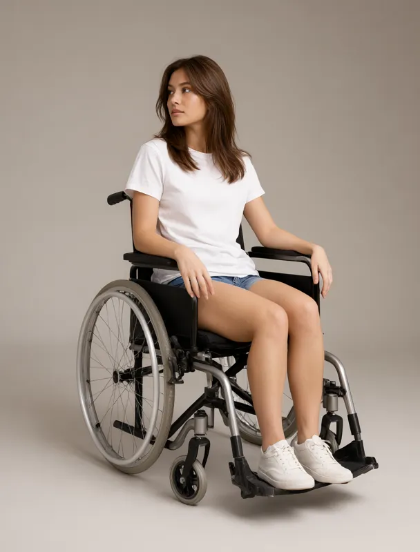
qwen image 2.1sitting in a lightweight manual wheelchair
a full color full length fashion photograph in three-quarter view, with the whole body in frame from head to feet, lit by soft even studio light against a plain warm gray backdrop. the subject is a slim mixed race woman of about twenty five with light skin. her hair is chestnut brown, long blowout layers. she wears a plain white crew-neck t-shirt and denim shorts. she sits in a lightweight manual wheelchair. she gazes off to the left side of the frame, away from the camera.
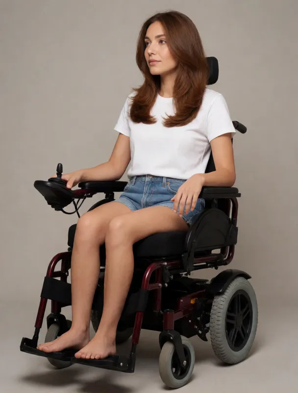
krea 2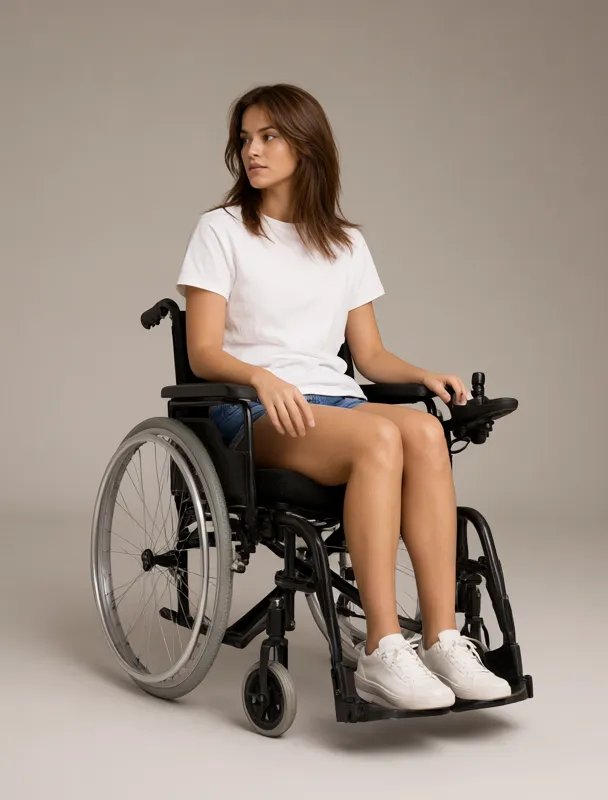
qwen image 2.1sitting in a power wheelchair with a joystick control
a full color full length fashion photograph in three-quarter view, with the whole body in frame from head to feet, lit by soft even studio light against a plain warm gray backdrop. the subject is a slim mixed race woman of about twenty five with light skin. her hair is chestnut brown, long blowout layers. she wears a plain white crew-neck t-shirt and denim shorts. she sits in a power wheelchair with a joystick control. she gazes off to the left side of the frame, away from the camera.
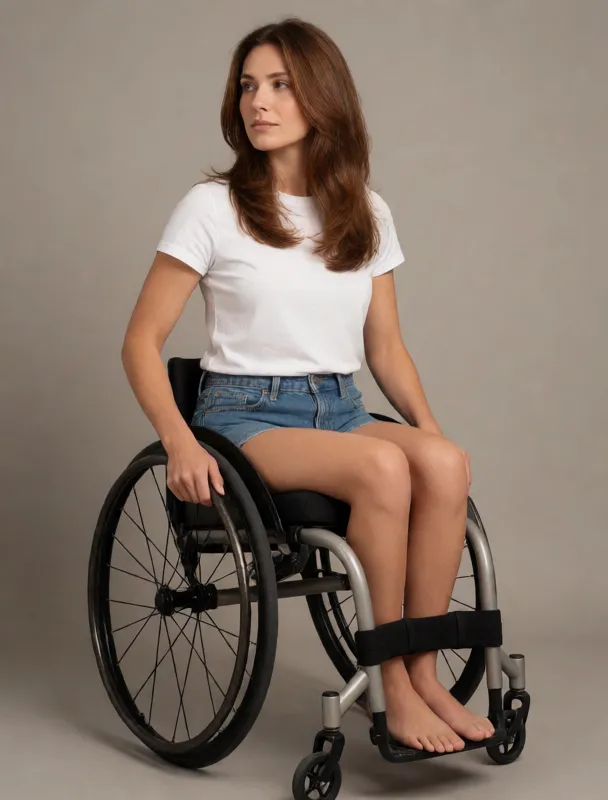
krea 2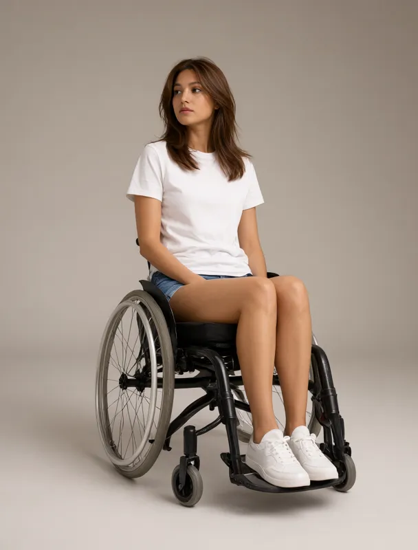
qwen image 2.1sitting in a sport wheelchair with angled wheels
a full color full length fashion photograph in three-quarter view, with the whole body in frame from head to feet, lit by soft even studio light against a plain warm gray backdrop. the subject is a slim mixed race woman of about twenty five with light skin. her hair is chestnut brown, long blowout layers. she wears a plain white crew-neck t-shirt and denim shorts. she sits in a sport wheelchair with angled wheels. she gazes off to the left side of the frame, away from the camera.
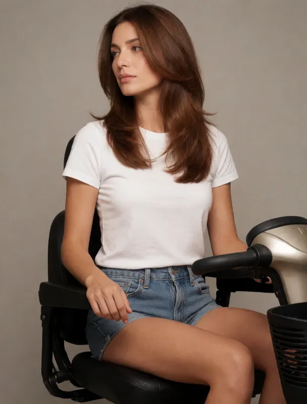
krea 2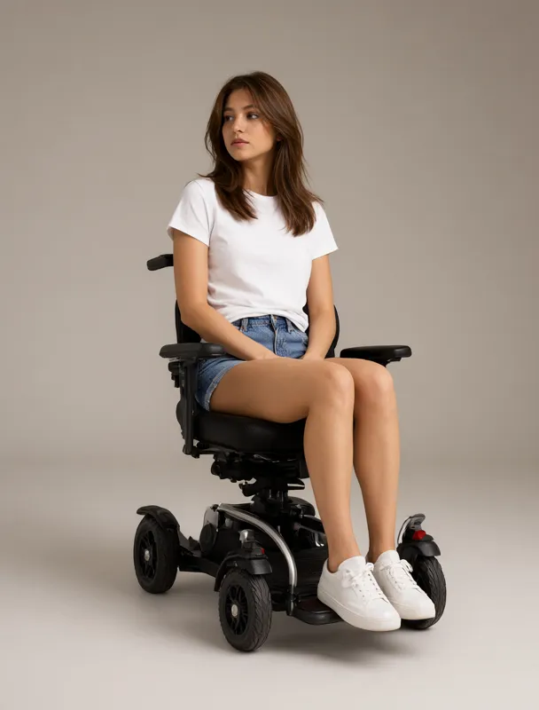
qwen image 2.1sitting on a mobility scooter
a full color full length fashion photograph in three-quarter view, with the whole body in frame from head to feet, lit by soft even studio light against a plain warm gray backdrop. the subject is a slim mixed race woman of about twenty five with light skin. her hair is chestnut brown, long blowout layers. she wears a plain white crew-neck t-shirt and denim shorts. she sits on a mobility scooter. she gazes off to the left side of the frame, away from the camera.
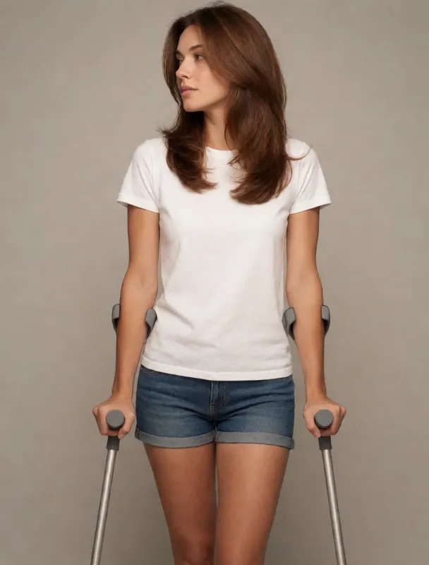
krea 2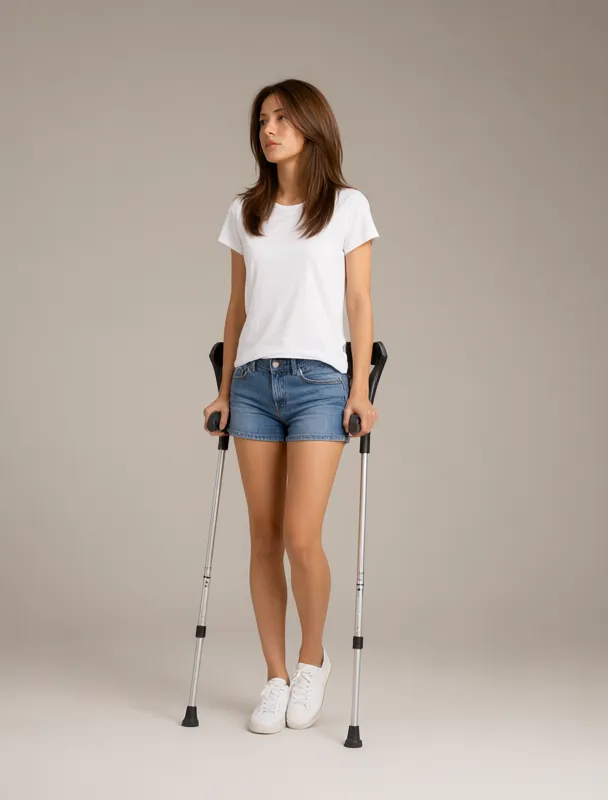
qwen image 2.1standing with a pair of forearm crutches
a full color full length fashion photograph in three-quarter view, with the whole body in frame from head to feet, lit by soft even studio light against a plain warm gray backdrop. the subject is a slim mixed race woman of about twenty five with light skin. her hair is chestnut brown, long blowout layers. she wears a plain white crew-neck t-shirt and denim shorts. she stands with a pair of forearm crutches. she gazes off to the left side of the frame, away from the camera.
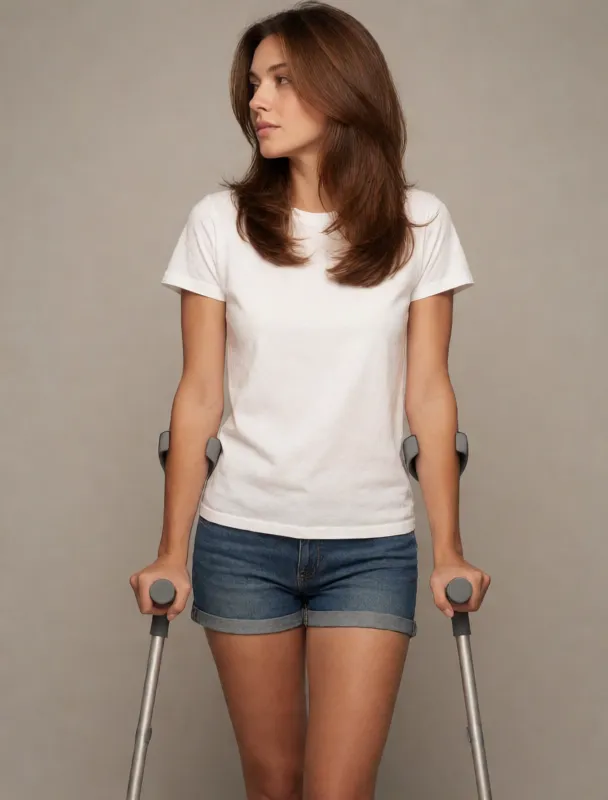
krea 2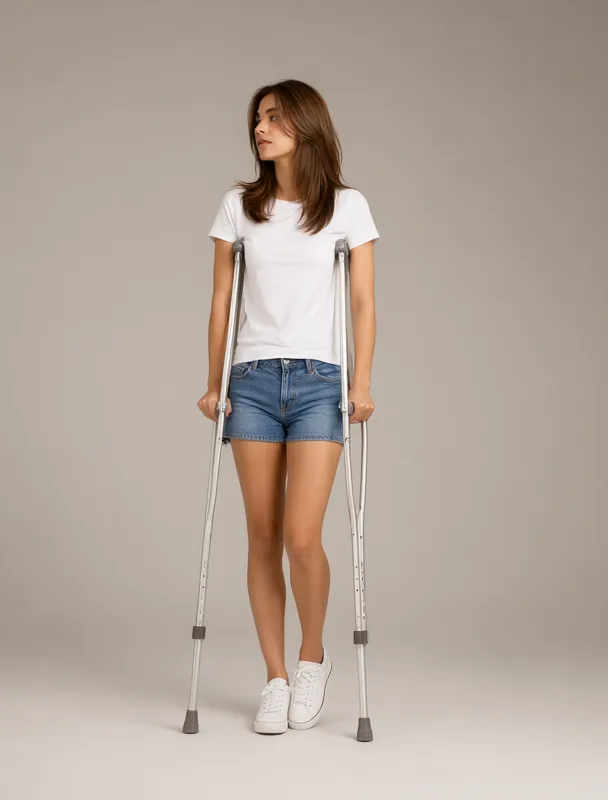
qwen image 2.1standing with a pair of underarm crutches
a full color full length fashion photograph in three-quarter view, with the whole body in frame from head to feet, lit by soft even studio light against a plain warm gray backdrop. the subject is a slim mixed race woman of about twenty five with light skin. her hair is chestnut brown, long blowout layers. she wears a plain white crew-neck t-shirt and denim shorts. she stands with a pair of underarm crutches. she gazes off to the left side of the frame, away from the camera.
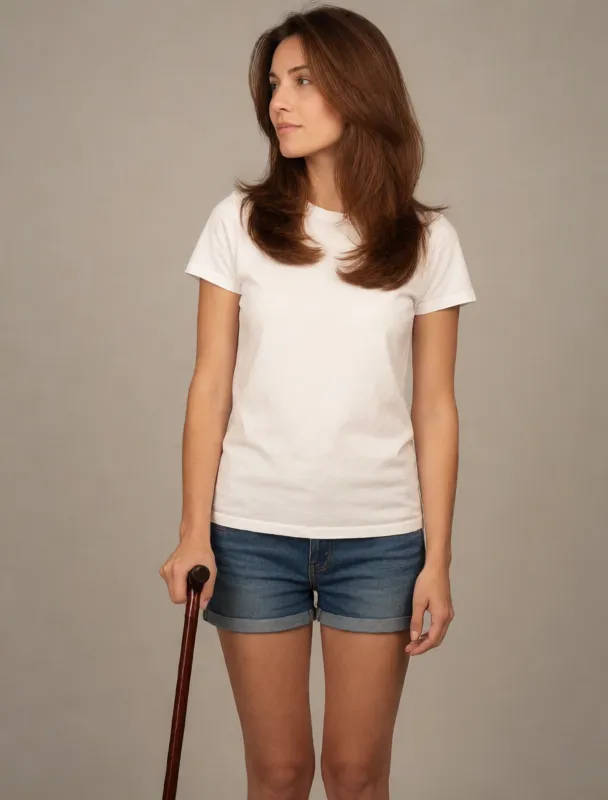
krea 2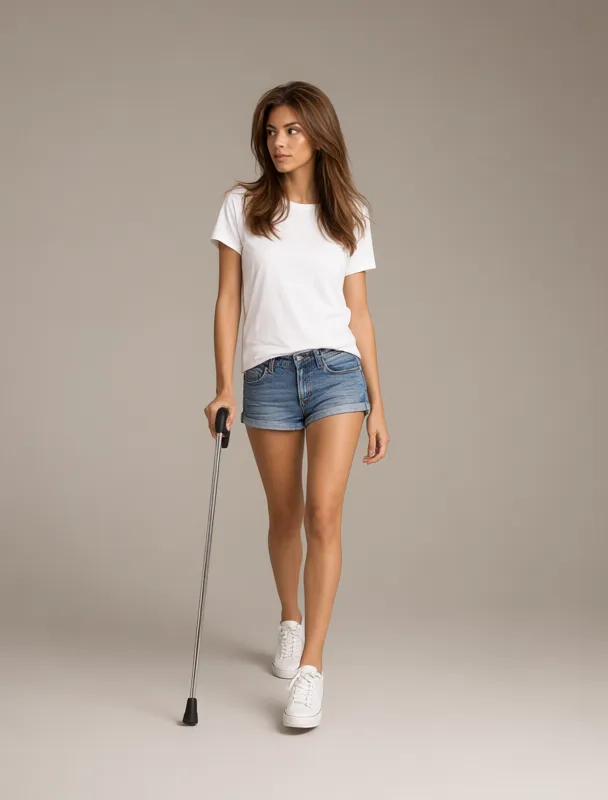
qwen image 2.1standing with a walking cane
a full color full length fashion photograph in three-quarter view, with the whole body in frame from head to feet, lit by soft even studio light against a plain warm gray backdrop. the subject is a slim mixed race woman of about twenty five with light skin. her hair is chestnut brown, long blowout layers. she wears a plain white crew-neck t-shirt and denim shorts. she stands with a walking cane. she gazes off to the left side of the frame, away from the camera.
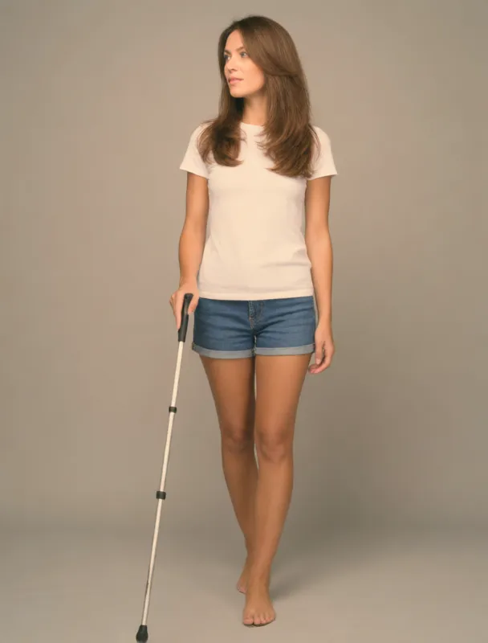
krea 2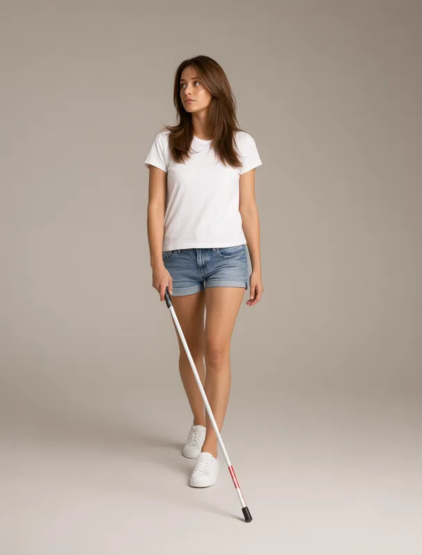
qwen image 2.1walking with a white cane
a full color full length fashion photograph in three-quarter view, with the whole body in frame from head to feet, lit by soft even studio light against a plain warm gray backdrop. the subject is a slim mixed race woman of about twenty five with light skin. her hair is chestnut brown, long blowout layers. she wears a plain white crew-neck t-shirt and denim shorts. she walks with a white cane. she gazes off to the left side of the frame, away from the camera.
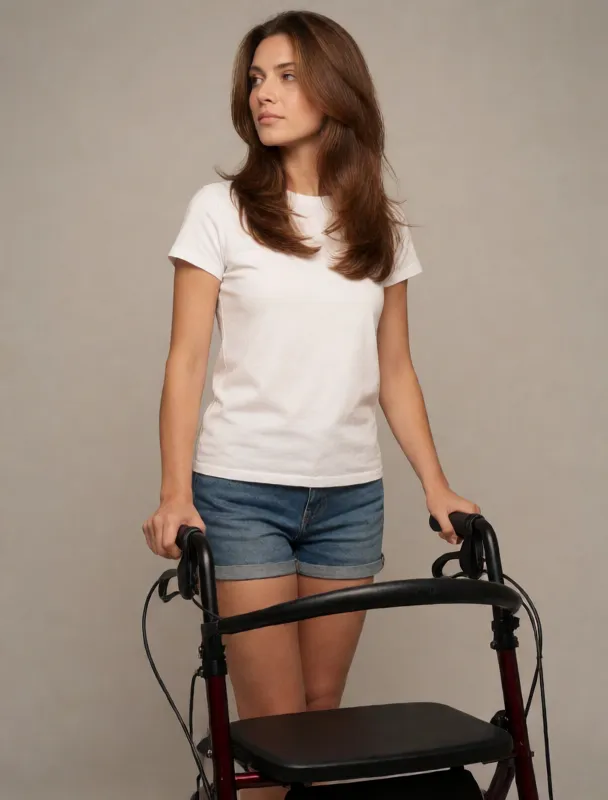
krea 2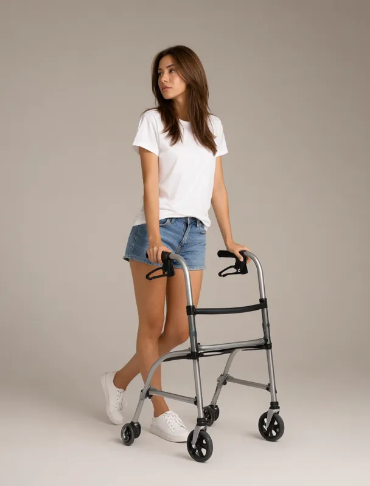
qwen image 2.1standing with a rollator walker
a full color full length fashion photograph in three-quarter view, with the whole body in frame from head to feet, lit by soft even studio light against a plain warm gray backdrop. the subject is a slim mixed race woman of about twenty five with light skin. her hair is chestnut brown, long blowout layers. she wears a plain white crew-neck t-shirt and denim shorts. she stands with a rollator walker. she gazes off to the left side of the frame, away from the camera.
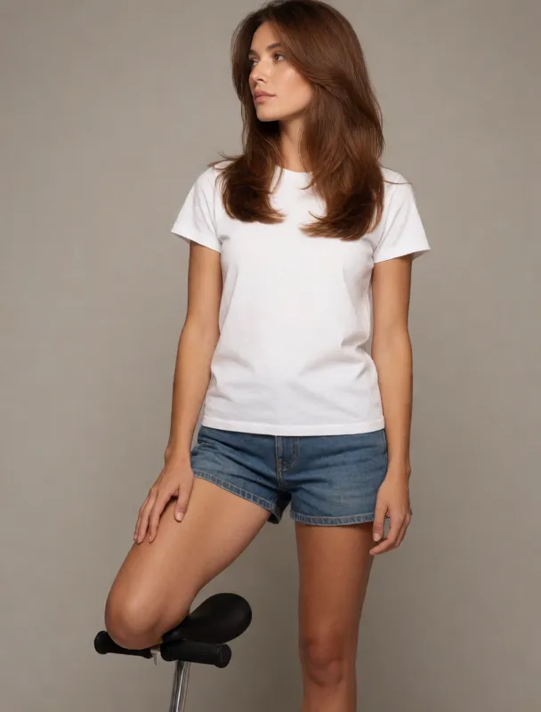
krea 2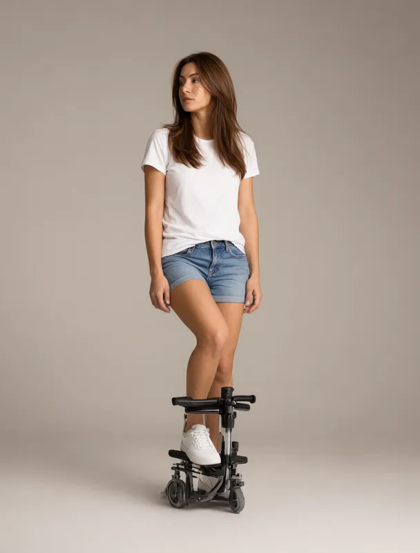
qwen image 2.1resting one knee on a knee scooter
a full color full length fashion photograph in three-quarter view, with the whole body in frame from head to feet, lit by soft even studio light against a plain warm gray backdrop. the subject is a slim mixed race woman of about twenty five with light skin. her hair is chestnut brown, long blowout layers. she wears a plain white crew-neck t-shirt and denim shorts. she rests one knee on a knee scooter. she gazes off to the left side of the frame, away from the camera.